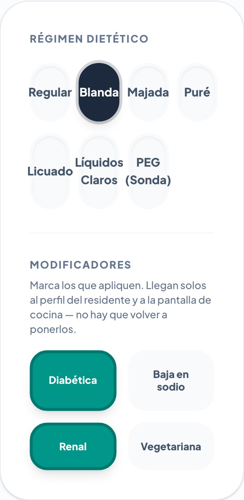
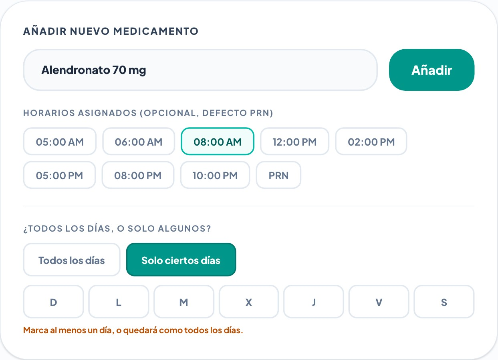
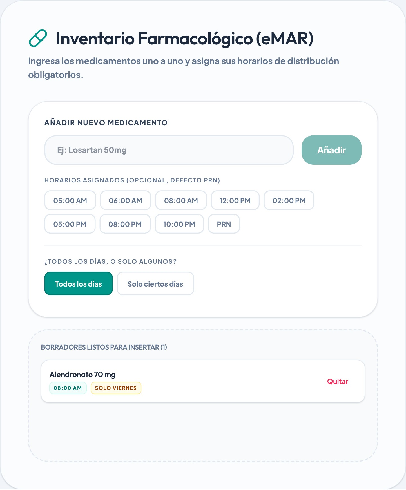
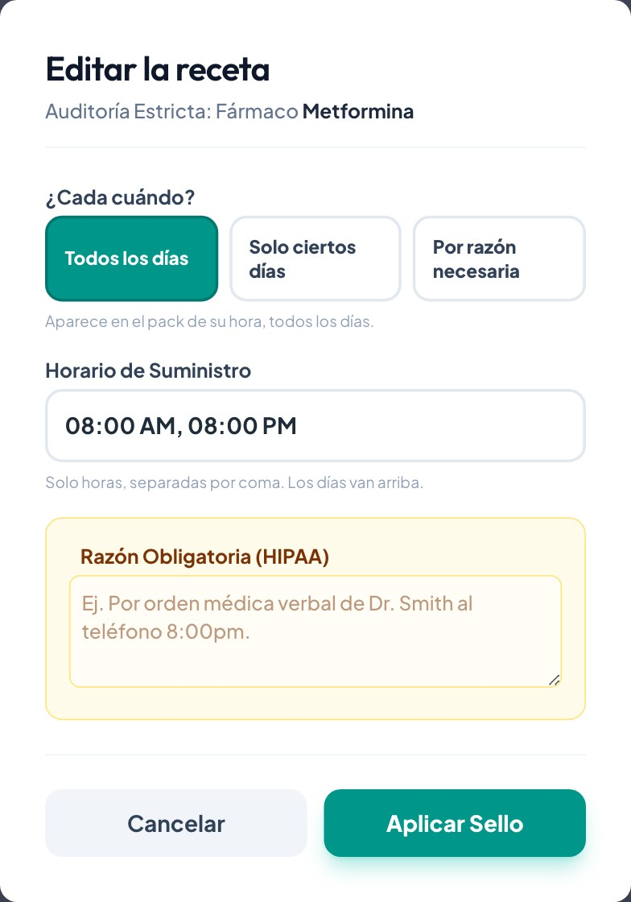
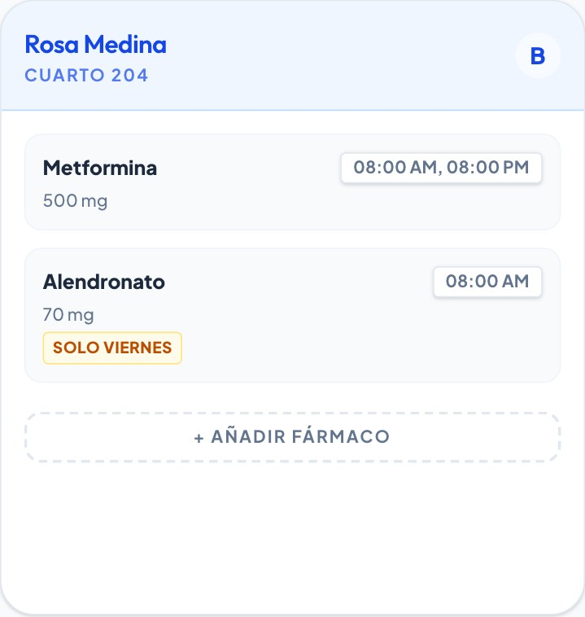
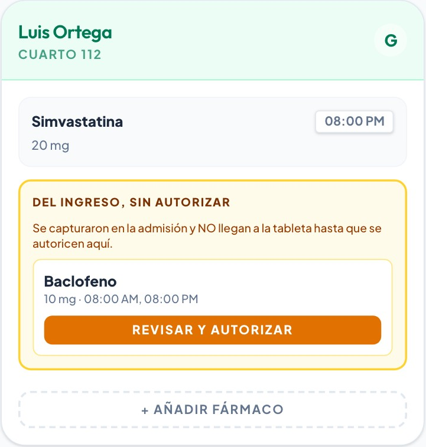
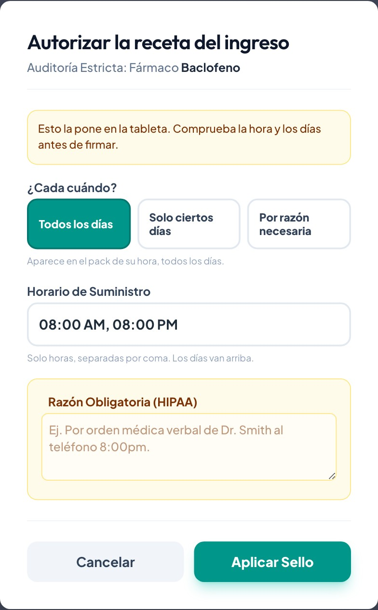

Cómo viaja la información de una admisión dentro de Zéndity, qué cambió el 11 de septiembre de 2026, y qué sigue pidiendo un segundo paso a propósito.
Empieza con una observación tuya, y era exacta.
Se fue a comprobar contra el código, y no era una impresión: un solo ingreso obligaba a tocar la misma información en cuatro pantallas distintas.
| Dónde | Qué había que escribir ahí |
|---|---|
| Ingreso (Intake) | La textura de la dieta. El nombre del medicamento y sus horas. |
| Catálogo de farmacia | La dosis y la vía, que no llegaban desde el ingreso. |
| Zéndity Med | Volver a montar la receta, y arreglar la pauta semanal. |
| Perfil del residente | Marcar otra vez si la dieta es diabética, baja en sodio, renal o vegetariana. |
Tres de esos cuatro tramos están conectados desde hoy. El cuarto —que confirmar un ingreso active solo las recetas— no se tocó, y el apartado 7 explica por qué esa decisión es tuya y no del sistema.
Cada apartado dice tres cosas: qué haces tú, a dónde llega solo y qué ya no hace falta repetir. Las fotos son de las pantallas de verdad; los residentes que aparecen en ellas no existen — el material de formación no lleva datos de nadie.
Cuatro paradas. La información se escribe en la primera.
Aquí se escribe todo una vez: identidad, riesgos, dieta completa y los medicamentos con sus horas y sus días.
Al confirmar el ingreso, la dieta —textura y modificadores— aparece en el perfil y en la pantalla de cocina sin que nadie la vuelva a escribir.
Los medicamentos llegan como borradores. Alguien los mira y los autoriza. Ese paso existe a propósito.
Una vez autorizada, la receta aparece en el pack de su hora, y solo los días que le tocan.
Lo único que cambió de este recorrido es cuánto hay que escribir en cada parada. La parada 1 ahora carga con casi todo; la 2 ya no pide nada; la 3 sigue pidiendo una firma, pero desde la pantalla donde trabajas.
Paso 3 del asistente: “Plan de Vida (PAI) y Riesgos”.
El formulario capturaba solo la textura —Regular, Blanda, Majada, Puré, Licuado, Líquidos Claros, PEG—. Los cuatro modificadores había que marcarlos otra vez en el perfil del residente. Para alguien con dieta diabética eso era escribir la misma dieta dos veces el mismo día, en dos pantallas distintas.
Ahora los dos están en el mismo sitio, uno debajo del otro:

Entrar al perfil después de la admisión a marcar los modificadores. Si están puestos en el ingreso, ya están puestos.
El ingreso es la foto del día de entrada. Un cambio posterior —una textura nueva, un modificador que se añade o se quita— se hace en el perfil del residente, que es donde vive la prescripción dietética del día a día. No hay que volver al ingreso.
Paso 4 del asistente: “Inventario Farmacológico (eMAR)”.
Eran dos problemas distintos con el mismo síntoma, y los dos están arreglados.
Un “una vez por semana” que viene del hospital entraba como diario, y había que abrirlo después en Zéndity Med para corregirlo. Ahora el ingreso pregunta, medicamento por medicamento, si es todos los días o solo algunos:

Si eliges “Solo ciertos días” y no marcas ninguno, el medicamento se guarda como todos los días. Lo dice el aviso en ámbar, y es a propósito: una pauta semanal sin ningún día marcado no tocaría nunca, y un medicamento que no aparece jamás en la tableta es peor que uno que aparece de más. Marca el día, o déjalo en “Todos los días”.
Cuando pulsas Añadir, el borrador ya lleva su día escrito:

Este era el que más se notaba, y no estaba en el ingreso: estaba en Zéndity Med. El botón que abría una receta ya creada preguntaba solo por la hora —y ni siquiera la enseñaba: el recuadro abría vacío—. Al guardar, como nadie le había dicho nada sobre los días, la receta salía diaria y sin días. Se ponía el viernes, se editaba cualquier cosa, y el viernes desaparecía sin que nada lo dijera.
“Editar Dosis” → un recuadro de hora, vacío. Al guardar: diaria, sin días, y la hora sin cambiar.
“Editar receta” → las tres preguntas, ya rellenas con lo que la receta tiene de verdad.

En la tarjeta del residente, una receta semanal ahora dice sus días. Antes no lo decía en ninguna parte:

El recuadro de la hora, en la tarjeta del residente, salía vacío en todas las recetas por un error de nombre de campo. Ya enseña el horario real. Si antes te parecía que Zéndity Med “no mostraba las horas”, no era impresión tuya.
Por qué el catálogo de farmacia estaba lleno de “Por Definir”.
Cuando Zendi analiza el documento que trae el residente, saca el nombre y la dosis: lo enseña en pantalla como “Alendronato · 70 mg”. Hasta hoy, esa dosis se perdía por el camino: el fármaco entraba al catálogo de farmacia con la dosis “Por Definir” y alguien tenía que volver a teclearla allí. Por eso 181 de los 197 fármacos del catálogo están así.
Ahora la dosis viaja hasta el catálogo, con dos reglas:
El campo del ingreso es uno solo —el ejemplo que sugiere es “Losartan 50mg”—, así que la dosis va dentro del nombre, como siempre. Lo que cambia es el camino automático: lo que Zendi lee del documento ya no se queda a medias.
Cuando aplicas las sugerencias de Zendi, los medicamentos entran con su hora pero como diarios: el documento rara vez dice los días de forma que se pueda leer sola. Si uno de ellos es semanal, tienes dos salidas: quitarlo de la lista del ingreso y añadirlo a mano con sus días, o dejarlo y ponerle los días al autorizarlo en Zéndity Med (apartado 6). Las dos son válidas.
El paso humano, ahora en la pantalla donde trabajas.
Una admisión no pone medicamentos en la tableta. Los deja como borradores, y alguien tiene que mirarlos y autorizarlos. Eso es deliberado: un medicamento no debería llegar al piso solo porque se escribió en un formulario.
El problema no era la barrera: era dónde estaba. La única pantalla que autorizaba borradores no está en el menú de nadie, y Zéndity Med los escondía. Resultado: los borradores no se autorizaban — se volvían a teclear a mano. Y el que no se retecleaba, se quedaba ahí, sin aparecer en ningún sitio.

Ahora aparecen en la tarjeta del residente, debajo de sus recetas vivas. El botón abre las mismas tres preguntas de siempre:
En Cupey quedó un medicamento capturado en un ingreso que nunca se autorizó. No estaba escondido a propósito: es que hasta hoy no había pantalla donde verlo. Ya aparece, en ámbar, en la tarjeta de ese residente. Si entra o no entra es una decisión clínica, y es tuya — lo que cambió es que el sistema ya no es el que lo esconde.

Un estado, no una palabra escrita en el campo de la hora.
Descontinuar escribía la palabra “DESCONTINUADO” dentro del campo del horario, y dejaba el estado de la receta en “activa”. La receta decía tres cosas a la vez, y de paso se perdía el horario real: se pisaba el único sitio donde constaba a qué hora se daba.
Horario: DESCONTINUADO
Estado: activa
La hora real: perdida
Horario: 08:00 PM
Estado: descontinuada
Con su razón y su firma
Las 27 recetas que estaban así en Cupey quedaron migradas, con respaldo. No cambia lo que ve nadie: la tableta ya las filtraba correctamente. Lo que cambia es que el expediente ahora dice la verdad sobre por qué una receta dejó de darse — que es lo que hace falta cuando alguien revisa un caso seis meses después.
Editar una receta descontinuada ya no la revive. Antes, cambiar una hora la devolvía a activa sin que nada lo dijera. Volver a poner un medicamento tiene que ser un acto propio, no el efecto secundario de otra cosa.
Una decisión que no es del sistema.
Se podría hacer que confirmar un ingreso active solas todas las recetas, y desaparecería el apartado 6 entero. No se hizo, y no por falta de tiempo: porque ese paso es la última vez que una persona mira una lista de medicamentos antes de que lleguen al piso. Esa lista viene de un documento de hospital, leída a veces por Zendi, a veces tecleada con prisa el día de una admisión.
Si decides que en Vivid ese paso sobra, se quita — es una decisión clínica tuya y de Andrés, y el sistema hará lo que ustedes digan. Lo que no parecía correcto era quitarla sin preguntar.
| Qué | Dónde se escribe | Dónde aparece solo | ¿Pide otro paso? |
|---|---|---|---|
| Textura de la dieta | Ingreso, paso 3 | Perfil y cocina | No |
| Diabética / bajo sodio / renal / vegetariana | Ingreso, paso 3 | Perfil y cocina | No |
| Nombre y horas del medicamento | Ingreso, paso 4 | Zéndity Med, como borrador | Sí — autorizar |
| Días de una pauta semanal | Ingreso, paso 4 | Viaja con el borrador | Sí — autorizar |
| Dosis leída por Zendi | Ingreso, paso 4 | Catálogo de farmacia | No |
| Cambiar hora o días después | Zéndity Med | Tableta del piso | No |
| Retirar un medicamento | Zéndity Med | Expediente, con razón | No |
Si vuelves a ver algo que se escribe dos veces, dilo. Cada una de estas conexiones salió de una observación tuya en el correo de revisión diaria. No hacía falta que vinieran con una solución dentro: bastó con que dijeras dónde dolía.